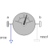
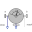

BasicCutForceBasic sensor to measure cut force vector (frame_resolve must be connected) |

|
Information
This information is part of the Modelica Standard Library maintained by the Modelica Association.
This basic sensor is aimed to be used within advanced sensors where the cut-force acting between the two frames is determined to which this model is connected. This cut-force is provided at the output signal connector force (= frame_a.f). If parameter positiveSign = false, the negative cut-force is provided (= frame_b.f).
Via parameter resolveInFrame it is defined in which frame the force vector is resolved:
| resolveInFrame = Types.ResolveInFrameA. | Meaning |
|---|---|
| world | Resolve vector in world frame |
| frame_a | Resolve vector in frame_a |
| frame_resolve | Resolve vector in frame_resolve |
In this basic sensor model, the connector frame_resolve is always enabled and must be connected. If resolveInFrame = Types.ResolveInFrameA.frame_resolve, the vector force is resolved in the frame to which frame_resolve is connected.
In the following figure the animation of a CutForce sensor is shown. The dark blue coordinate system is frame_b, and the green arrow is the cut force acting at frame_b and with negative sign at frame_a.

Parameters (2)
| resolveInFrame |
Value: Modelica.Mechanics.MultiBody.Types.ResolveInFrameA.frame_a Type: ResolveInFrameA Description: Frame in which output vector is resolved (world, frame_a, or frame_resolve) |
|---|---|
| positiveSign |
Value: true Type: Boolean Description: = true, if force with positive sign is returned (= frame_a.f), otherwise with negative sign (= frame_b.f) |
Connectors (4)
| frame_a |
Type: Frame_a Description: Coordinate system a |
|
|---|---|---|
| frame_b |
Type: Frame_b Description: Coordinate system b |
|
|  | frame_resolve |
Type: Frame_resolve Description: The output vector is optionally resolved in this frame (cut-force/-torque are set to zero) |
| force |
Type: RealOutput[3] Description: Cut force resolved in frame defined by resolveInFrame |
Components (1)
| world |
Type: World |
|---|
Used in Components (2)
|
Modelica.Mechanics.MultiBody.Sensors
Measure cut force vector |
|
|  |
Modelica.Mechanics.MultiBody.Sensors
Measure cut force and cut torque vector |